Chrome Extension · Developer Tools
Click a form field's label or a table's column header — on an Odoo page or any website — and a developer-tool style panel shows you everything about it, including a live lookup straight from ir.model.fields on Odoo pages.
One click swaps guessing at CSS classes and opening Odoo's Technical Settings for an instant, accurate answer.
Model, ORM type, relation, required/readonly/stored state, help text, and how the field is actually declared in the current view — straight from your Odoo server's own ir.model.fields.
Generates the shortest selector and XPath that still uniquely resolve back to the exact element — ready to paste into a test script or view XML.
Search every field and list column on the page by label or technical name, live as you type. Open inside an Odoo wizard and it automatically scopes to just that dialog.
Build an Odoo search domain from the model's real fields — labels, types, and selection choices via fields_get — then copy it as a Python domain or JSON. Nothing is applied to records; it only generates the filter text.
Hide a form's chatter to reclaim screen space, or expand it into a searchable, filterable reader for already-loaded messages, notes, and tracked field changes — entirely local, no network requests.
Works on standard HTML forms and tables too, not just Odoo — labels, inputs, selects, textareas, ARIA-labelled custom controls, and <th>/grid columns.
Clicks on detected fields are intercepted before the page sees them — no checkbox ever toggles, no dropdown ever opens, no value ever changes. Need to keep editing while inspecting? Turn Intercept clicks off for click-through mode.
Password, hidden-token and other secret-named field values never appear in the panel or the clipboard unless you explicitly turn on Show sensitive values.
A gear in the panel header opens a Settings page: Light, Dark, or System (which now repaints live when your OS flips); six accent colors that recolor links, tabs, the primary button and the outlines drawn around detected fields; and Comfortable or Compact density. Every other setting lives in the same page, and the popup mirrors your choices.
The popup stays small — quick toggles and an All settings button underneath Enable Inspector that opens everything in a real browser tab: Appearance, Detection, Behavior, Debug, the sites you auto-enable on, and a privacy summary, all with a live preview of the actual panel. It repaints as you change anything, and a change made in the popup shows up here immediately (and the other way round).
Add ?debug=1 to a page URL — or flip Debug logging in Settings — for verbose console diagnostics and a live readout of the effective settings. ?debug=0 forces it off, the URL always wins over the saved switch, and it is never stored.
A dedicated Button tab shows the Python method a button calls, the action it opens, its special= and confirm=, and the record it would act on. A normal click is never hijacked — inspect buttons with Intercept clicks off, or pick one in the Field Finder without pressing it.
The panel resolves the active view's XML ID and the chain it inherits from — so you can see that my_addon.view_partner_form_inherit is layered on base.view_partner_form — with a direct link into Technical → Views for each one. List columns report the list view, not the form view.
The panel reads your server's Odoo version and builds the “Open in Odoo” link in the URL style that version actually supports — the legacy /web#model= hash on 16 and earlier, the /odoo/action- route on 17+.
Tick one box and the inspector starts by itself on every page you load at that one origin. Chrome is asked for access to that site only, remembered sites are listed with a Remove button in the popup and in the settings tab, and switching it off hands the access straight back.
Except one explicit, toggleable exception: Odoo field/model lookups, which ask the same Odoo server you're already logged into — never a third-party server. No host access at all unless you opt in per site. See the privacy policy.
Screenshots from the actual extension — not mockups.
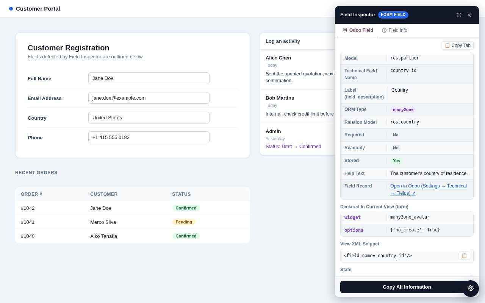
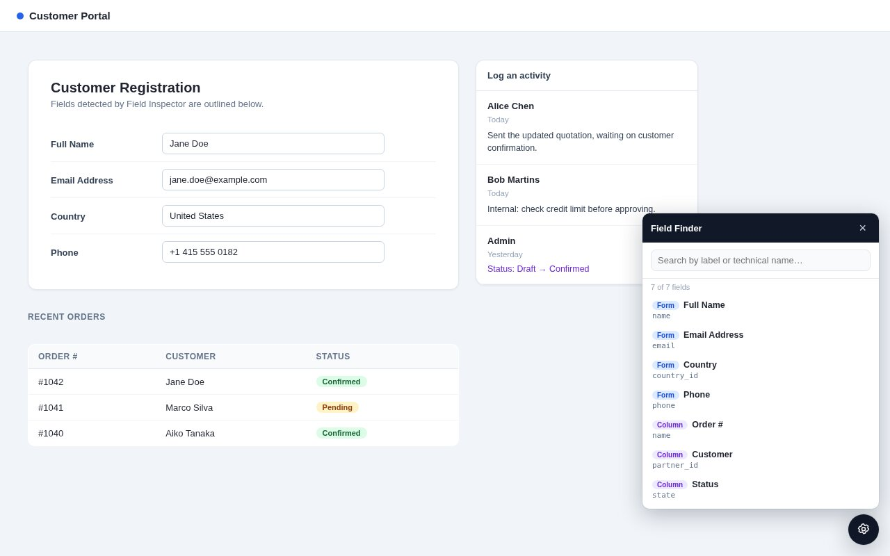
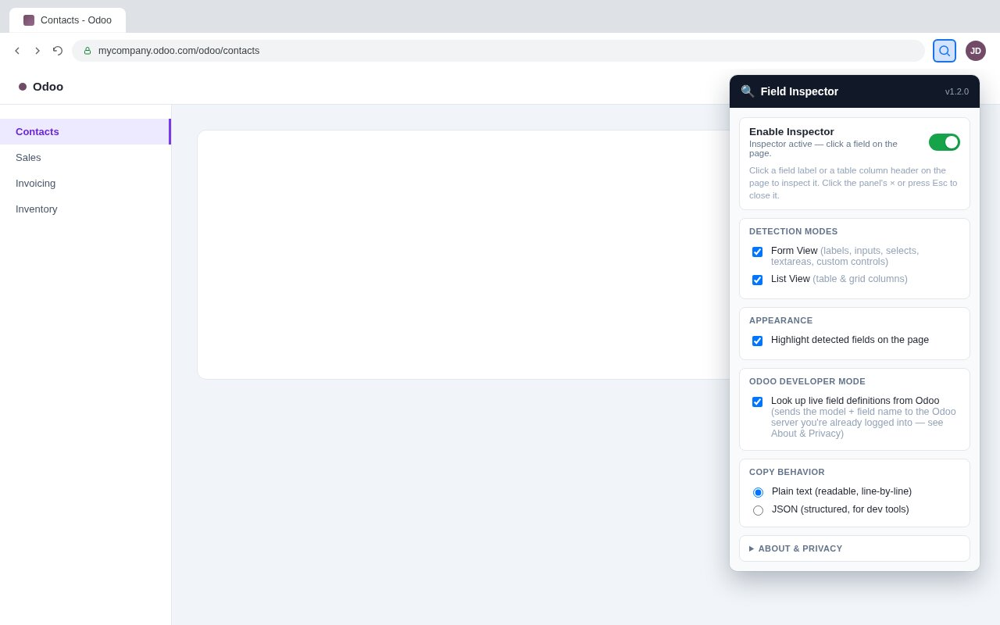
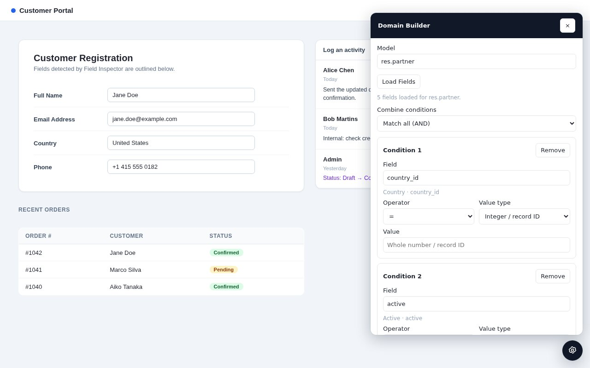
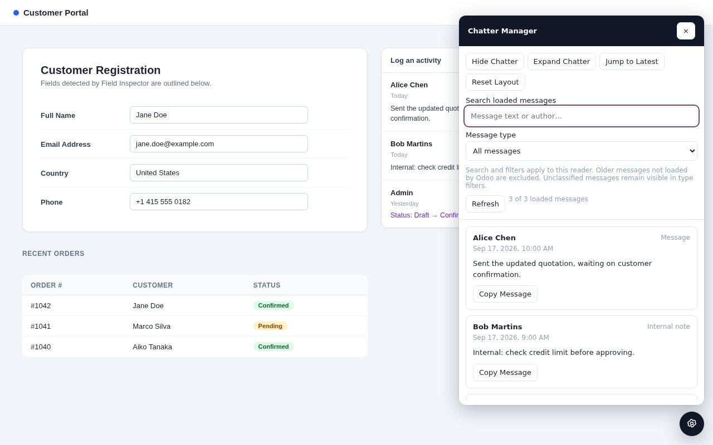
Every functionality illustrated — settings, buttons, views, redaction, debug and more. The user guide walks through all of them.
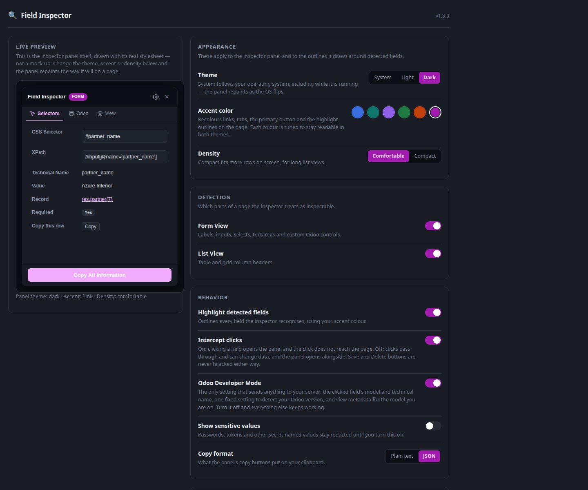
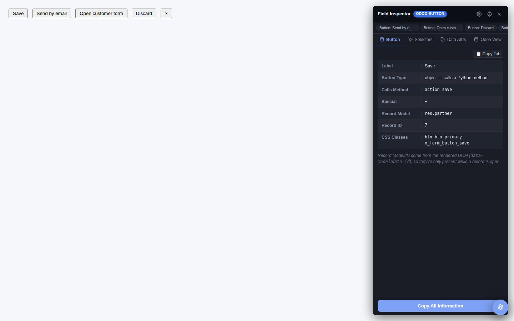
special=/confirm= and target record.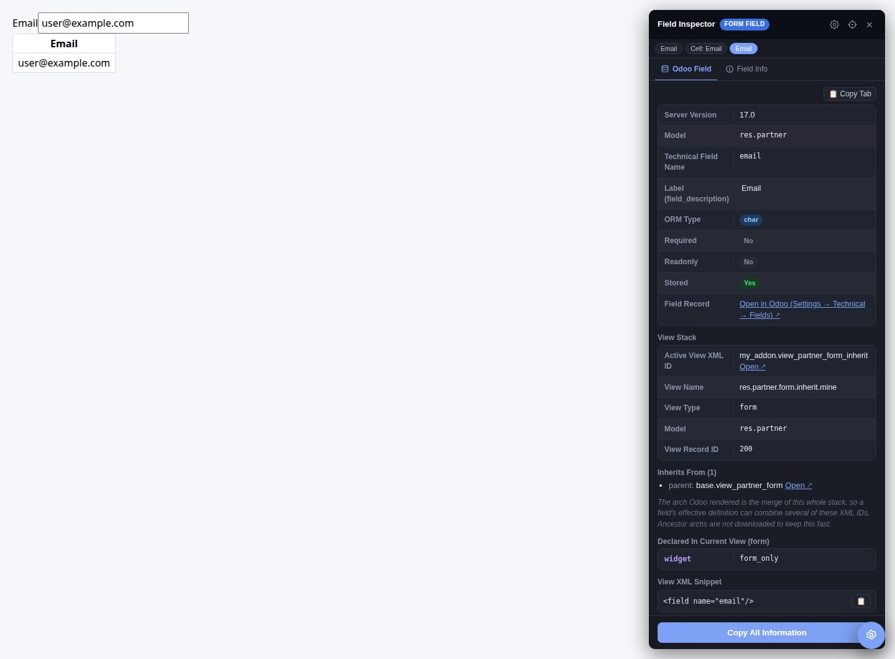
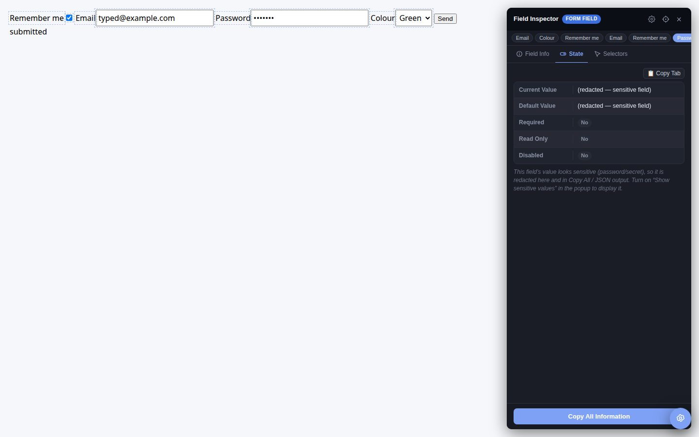
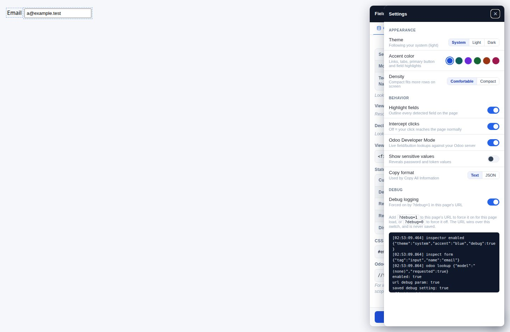
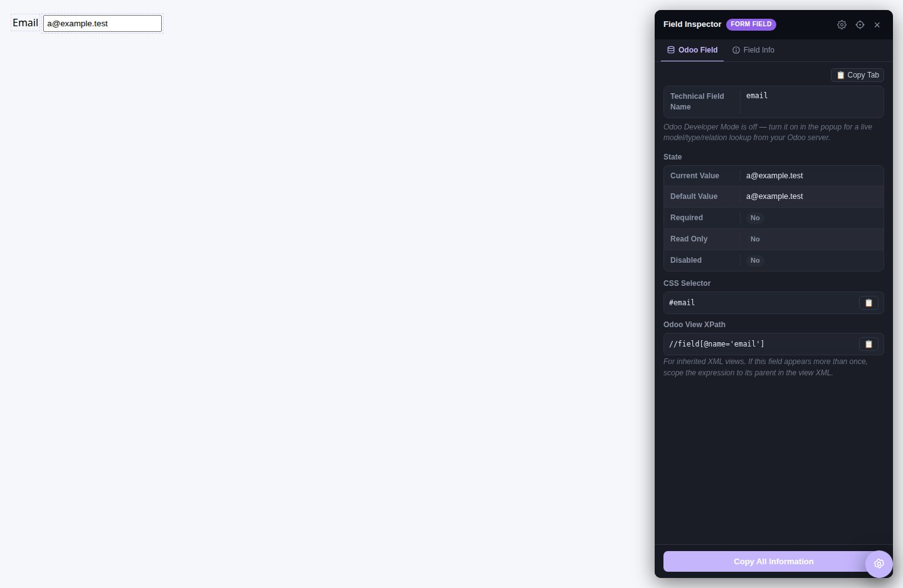
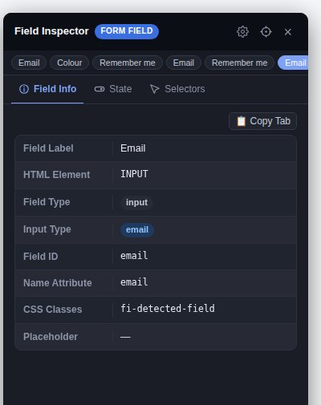
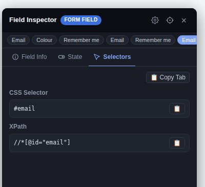
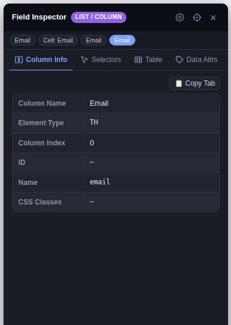
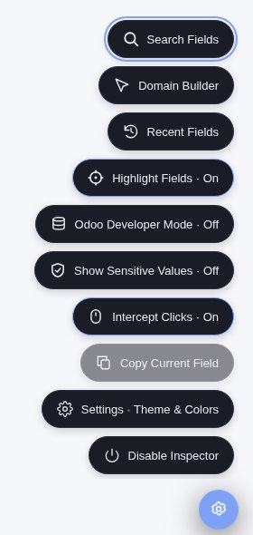
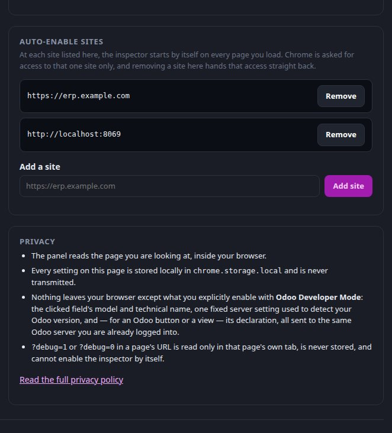
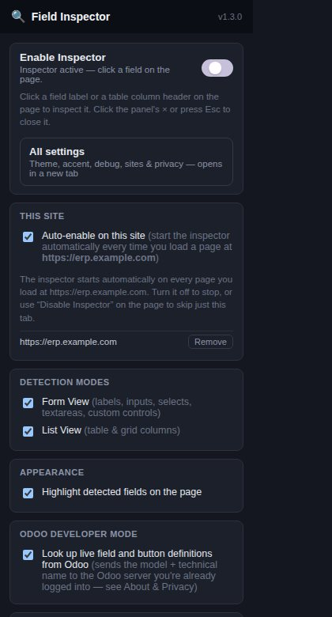
…and 19 screenshots in total, each tied to a feature — see the user guide.
A step-by-step walkthrough of every functionality — with a screenshot for each one: quick start, field inspection, selectors, columns, copying, Field Finder, buttons, View Stack, click safety, Domain Builder, Chatter Manager, options menu, appearance, the settings tab, auto-enable sites, debug mode, privacy and FAQ.
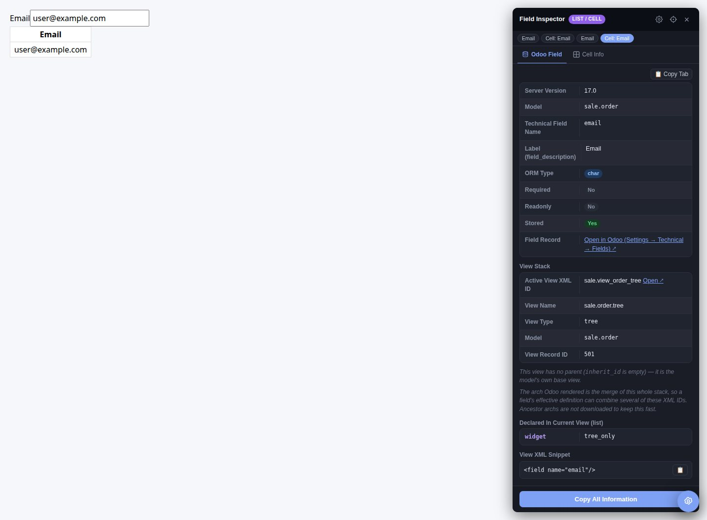
sale.view_order_tree — the list view, not the form view.Full setup, architecture notes, and a manual testing checklist are in the project README.